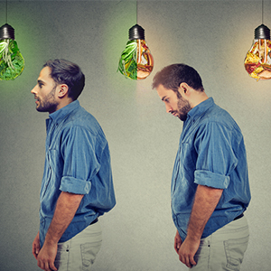
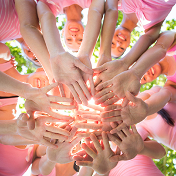

<ion-header>
  <ion-toolbar>
    <ion-buttons slot="start">
      <ion-back-button color="white" defaultHref="/tab1"></ion-back-button>
    </ion-buttons>
    <ion-title class="back-title">
      Patient
    </ion-title>
  </ion-toolbar>
</ion-header>

<ion-content>

  <div *ngIf="net == 'on'">
    <div class="animated fadeInUp delay-0.5s">
       <div class="page-div">
        
        <p class="parent-icon-two"><i class="fas fa-utensils"></i></p>
       </div>
       <p class="title-images animated fadeInUp delay-0.5s">التوصيات الغذائية " كل ولا تاكل"</p>
    </div>

    <div class="animated fadeInUp delay-0.5s"> 
      <div class="page-div animated fadeInUp delay-0.5s">
        
        <p class="parent-icon-two icon-cus"><i class="fas fa-dumbbell"></i></p>
      </div>
      <p class="title-images animated fadeInUp delay-0.5s">أساليب تعديل نمط الحياة</p>
    </div>

    <div class="animated fadeInUp delay-0.5s"> 
      <div class="page-div animated fadeInUp delay-0.5s">
        
        <p class="parent-icon-two icon-cus"><i class="fas fa-calendar-plus"></i></p>
      </div>
      <p class="title-images animated fadeInUp delay-0.5s">احداث توعية</p>
    </div>


  </div>

  <div *ngIf="net == 'off'">
     
  </div>

</ion-content>
